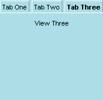

| Attributes | Common Children |
| align | <tabbox> |
| class | <tabpanel> |
| id | |
| flex | |
| orient | |
| autostretch |
| Attributes | Common Children |
| align | <tab> |
| class | |
| flex | |
| id | |
| orient | |
| autostretch |
| Attributes | Common Children |
| align | <box> |
| class | <titledbutton> |
| flex | |
| id | |
| orient | |
| autostretch |
| Attributes | Common Children |
| style | |
| selected | |
| orient | |
| autostretch |
A tab widget provides the user with a facility for switching between different views using tabs. The tab is declared using the <tabcontrol> tag. The tabcontrol is an extension of the box tag.
A tab widget can have a horizontal or vertical alignment, which can be specified using the align attribute on the tabcontrol widget. The tab widget consists of two components: a tab box that contains the tabs themselves, and a tab panel, which contains the contents that are switched in and out of view when different tabs are selected.
The tab box is specified using the tabbox tag. This tag is also an extension of the box, and it can also align its children horizontally or vertically using the align attribute. Use horizontal alignment to place the tabs on the left or right of the tab panel and vertical alignment to place the tabs above or below the tab panel.
The tab box has individual tabs as its children, and these are declared using the tab tag. A tab is also a box, and it can contain arbitrary content, thus allowing the designer to create everything from simple tab text labels to complex graphical tabs.
The tab panel is declared using the tabpanel tag. Each child of this
widget is considered to be a unique view. There is a one-to-one correspondence
between the tabs in the tab box, and the views in the tab panel. For example,
clicking on the third tab (as specified in the tab box) results in the
third view (as specified in the tab panel) being made visible. The basic
tab widgets fit together as in the following example:
<tabcontrol align="vertical"> <tabbox align="horizontal"> <tab>Tab One</tab> <tab>Tab Two</tab> <tab>Tab Three</tab> </tabbox> <tabpanel flex="100%"> <titledbutton value="View One"/> <titledbutton value="View Two"/> <titledbutton value="View Three"/> </tabpanel> </tabcontrol> |
 |
The selected item in the tab panel is reflected in the content model using the index attribute. This index is zero-based. If the tab widget's width and height are not constrained, the widget will size itself to fit its largest view (regardless of whether or not that view is initially visible). All views will be flowed in order to determine the tab's width and height (unless the widget's width and height are constrained already).
The tab panel can be used independently of the tab control by using
the deck tag. It can track selection and size itself to its largest view
just as the tab panel can. Border styles can be applied to tabs, and they
will be automatically drawn around the view with a gap between the edge
of the tab that is flush with the view.
Last updated: 2/17/00 Ian Oeschger